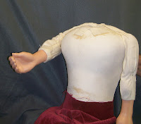

Bodies for sale
8/30/2012
{kind=link}
BODY for 35"-36" Figure. (By Detweiler) I won't describe this as "new" since I've had it in my stock room for nearly 20 years. But it is unused and like new in condition. Wood frame body, fully lined inside and out. Sewn and poly stuffed arms and legs. Latex hands ( hands by Lovik, as I recall). Neck opening "socket" design, ready to receive head with "ball" base on the neck.
http://cgi.ebay.com/ws/eBayISAPI.dll?ViewItem&item=261090199129
BODY FOR 38"-40" VENTRILOQUIST FIGURE (DUMMY/DOLL).
WITH HAND SHAKER and NUDGER! By LOVIK.
{kind=link}

Torso is molded rigid latex (composition), naturally contoured chest, waist and shoulders. Partially lined. Plywood base and plywood shoulder braces. Rigid latex (composition) hands and feet. The torso is equipped with two animations. A lever inside the right shoulder raises and extends the right arm as a "handshaker". A lever at the left shoulder, when pulled downward, causes the left arm/elbow to lift and move outward to "nudge" the ventriloquist. The neck opening is designed to be used with a head that has the ball shaped base on the neck, which would rest and turn upon the cushioned shoulder opening. This body was built for the Knee Pal ventriloquist figures built during the late '70s and into the '80s. It is in excellent condition and has never been used, at least not significantly. I'll include the clothes. The shirt is hand sewn just for this figure.http://cgi.ebay.com/ws/eBayISAPI.dll?ViewItem&item=290767794807